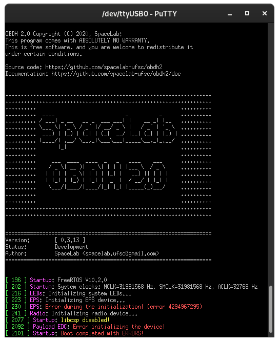

Usage Instructions
Powering the Board
Since the OBDH 2.0 is a service module within a satellite bus, to correctly provide its power supply, it requires an external \(3.3\pm0.2\ V\) power input and a current capability of at least \(100\ mA\) (might change depending on the daughterboard requirements). As presented in the PC-104 and programming interface sections, some options are given to power the module to improve flexibility during development. The board has two power schemes: the JTAG interface for debugging, and the PC-104, for the flight configuration. The first case uses both P1 or P2 connectors as power input (besides the JTAG and UART interfaces) and requires a jumper connection in the P6 connector. The second uses the PC-104 pins H1-45 and H1-46 to provide the power, and the P6 connector should remain open. For pinout details, refer to the external connectors in the hardware chapter.
Log Messages
The OBDH 2.0 has a UART interface dedicated to debugging, described in Table 8. It follows a log system structure to improve the information provided in each message. The Fig. 34 shows an example of the logging system, more specifically the initialization sequence. The messages use the following scheme: in green inside brackets, the timestamp; in magenta, the scope (or origin) of the log; and lastly the actual message, which might be white (info or note), yellow (warning), and red (error).
{kind=link}

Fig. 34 Firmware initialization on PuTTy.
Daughterboards Installation
The daughterboard requirements might change for each application board attached. Then, it is important to check at least a minimal set of mandatory characteristics. First, it is important to verify mechanical parameters that concern size (recommended \(63.5 \times 43.5\ mm\)), maximum height (no higher than \(7\ mm\)), screw attachment (refer to mechanical sheet [9]), and contact connector positioning. After this, the electrical interface must be checked (refer to Daughterboard). There are 3 different power supply options, a \(3.3\ V\) source shared with the OBDH board itself, another \(3.3\ V\) source shared with the antenna deployer, and the main battery bus that ranges from \(5.4\) to \(8.4\ V\). Lastly, depending on the application board design, it is necessary to check communication interface protocols and parameters, control inputs and outputs, and external interfaces with other modules.
Flight Preparation
Before flight an exhaustive inspection should be done, carefully make sure all hardware components are working as expected, including power consumption, memory access, communication busses, etc. After making sure the board hardware is working correctly, the flight firmware should be tested.
Then, the firmware healthcheck flag should be enabled in config and the MSP430 should be reprogrammed, this is done to check memory operations and the mission manager functionality, all the checks should pass. These healthcheck routines also erase the memories, which should be done anyway before launch. Finally, the tested firmware should be reprogrammed to the \(\mu\)C and the board is ready for flight.